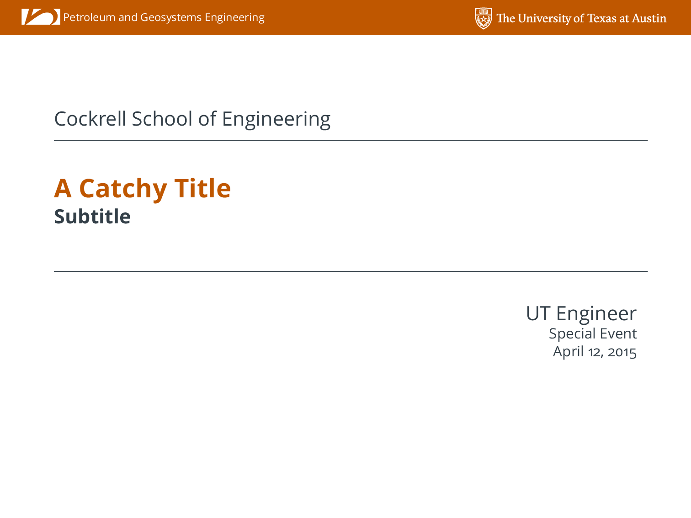

A LaTeX Beamer template/theme for the Cockrell School of Engineering
This post is mainly aimed at my colleagues (and students) in the Cockrell School of Engineering at The University of Texas at Austin. As you may have gathered from other posts on this blog, I am a huge fan of LaTeX for typesetting documents. Recently, I had to give a talk within the Department and was asked polietly by our Communications Coordinator to use a provided MS PowerPoint template that conforms to the Visual Style Guide of the Cockrell School of Engineering.
I have many reasons for disliking PowerPoint that I will not go into here, but I have avoided using it at all costs for several years now, and did not want to start now. I also have an appreciation for branding and respect the desire to project a uniform brand from the Departments/School. My solution was to create my own LaTeX Beamer presentation style that replicates the Cockrell School PowerPoint as close as possible. I hacked it together relatively quickly for my talk which I delivered last week, but decided over the weekend to put together something a little more robust to share with my colleagues in the Cockrell School. The style file accepts arguments to input different department names and has some nice features for using BibTeX citations within the presentation.
The repository can be found cloned with git with the following command:
git clone git@github.com:johntfoster/cockrell-school-latex-beamer-template
it can also be found on GitHub. Feel free to fork it and extend it as you see fit. If you find any errors or add useful extensions, please send pull-requests.
You can also download a zip archive of the files : cockrell-school-latex-beamer-template-master.zip
An example of the PDF output results are shown below:

Comments
Comments powered by Disqus